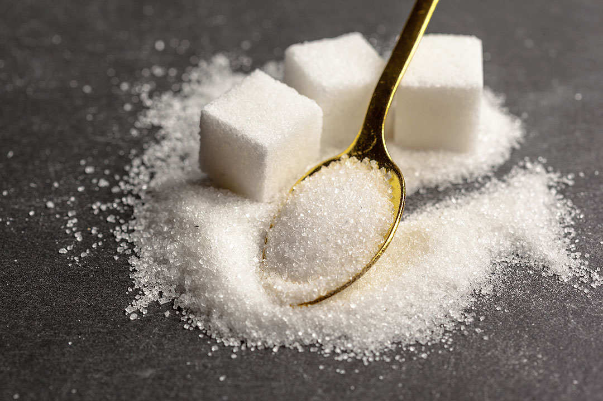
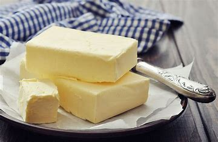

Ingredients
- 1 ½ cups Graham Cracker Crumbs

- ½ cup Sugar 
- 1/3 cup Butter, melted 
- 4 (8 oz) packages Cream Cheese

- 1 cup Sugar
- 1 teaspoon Vanilla Extract

- 4 Eggs
- 1 cup Sour Cream

Instructions
- Preheat oven to 325°F (165°C).
- In a bowl, combine Graham cracker crumbs, sugar, and melted butter. Press into the bottom of a springform pan.
- In a large bowl, beat cream cheese, sugar, and vanilla until smooth.
- Add eggs one at a time, mixing well after each addition. Then mix in sour cream.
- Pour the cream cheese mixture over the crust in the springform pan.
- Bake for 50-60 minutes, or until the center is set.
- Let cool, then refrigerate for at least 4 hours before serving.